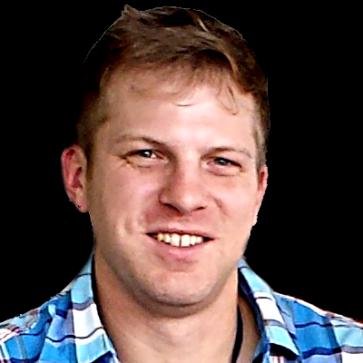
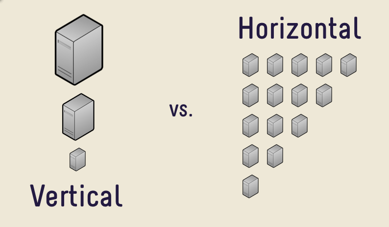
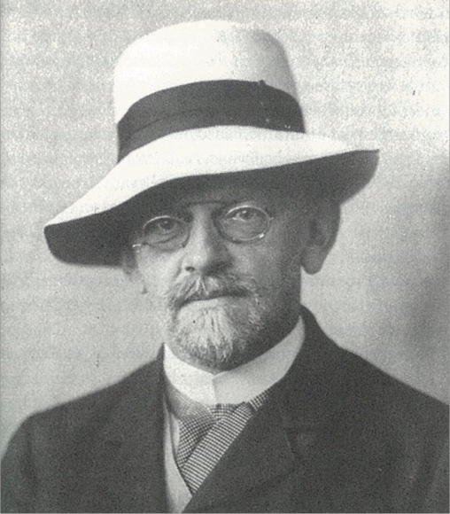
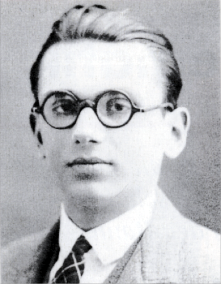
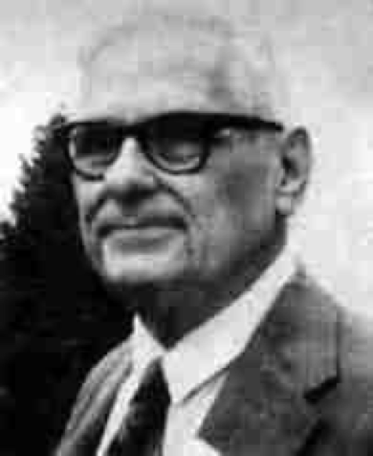
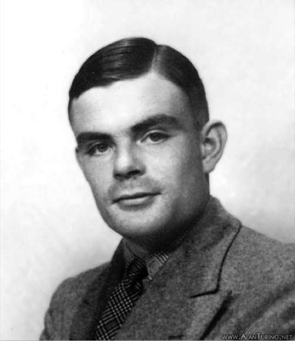
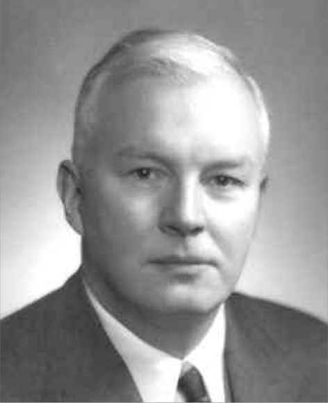
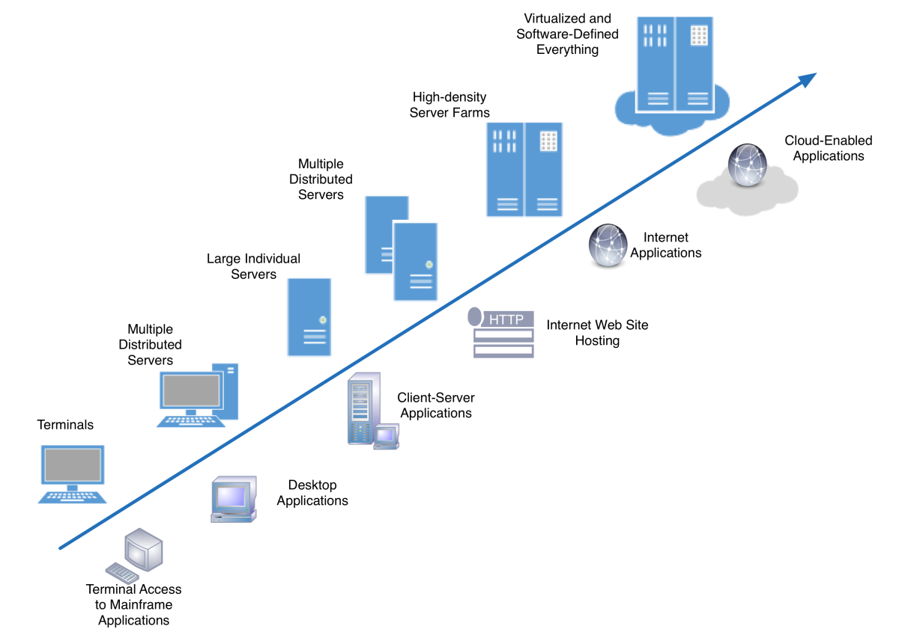

Ideas that shaped Functional Programming


Any application that can be written in JavaScript will eventually be written in JavaScript.
Jeff Atwood
Fast forward
- Languages are going meta
- Not restricted to the platform they will run on
- Static Typing is very useful, especially for large applications
- Developer Experience and tooling
Let's branch into a different domain
Where are the similarities?
- Fast paced, constantly changing
- Trends matter
- "Open-source"
- Highly dependend on "hardware"
- Usually performed by groups of individuals with different skill-sets
Music evolves all the time...
- Musical ideas spread through communities, communities influence each others
- Changes are incremental and usually small
- But sometimes there are game-changers (paradigm-shifts)
The electric guitar changed everything
Back to Programming languages
1980's
- C++
- Common Lisp
- Erlang
- Perl
1990's
- Haskell
- Python
- Ruby
- JS
- PHP
- OCaml
2010's
- Rust
- Dart
- Kotlin
- ReasonML
OOP concepts are easier to misuse than FP
- If objects are supposed to mutate each other with messages, why is this possible?
var ret = '';
ret = project.namespace + '.' + project.repository;
ret += (project.subfolder === undefined
|| project.subfolder=='') ? '' : '.' + project.subfolder;
ret += '.' + project.branch.replace(/\//g, '_');
ret += (pipelineName === undefined) ? '' : '.' + pipelineName;
return ret;
Cloud was a new way to scale the backend

Backend
- Java and JVM better at squeezing all the juice out of a box
- Functional paradigm better for stateless services
Frontend
- Devices (Desktop to Web to Mobile)
- Space
- UX
- Product design more integrated with dev teams
- Less clutter and smaller applications
- That serve specific use-cases
- State can be distributed between applications
Programming Paradigms
- Both OOP and FP are designed to manage state in smaller chunks
- Both are an answer to imperative procedural languages (GOTO:)
Programming Paradigms
Object Oriented
- Better at context
- Less reusable for new contexts
- Very flexible and open
- Needs to be managed with patterns
Functional
- Functions are generic building blocks
- Context needs to be managed
- More reusable smaller chunks
- More rigid, built-in patterns
As programmers we are like divers
Readability is a big deal
Context is also a big deal
Reusable stable building blocks?
Mathematics is different...
Basics of set theory
r :: [a] → [a]
First-order logic (expressed in Prolog)
person(alan)
person(grace)
person(david)
person(margaret)
=> person(turingmachine)
> false.
=> person(alan)
> true.
father(alan, david)
father(alan, margaret)
mother(grace, david)
mother(grace, margaret)
sibling(X, Y) :-
X \= Y,
parent(P, X),
parent(P, Y).
=> sibling(X, david)
> X = david ;
X = margaret ;
David Hilbert

- Studied foundation of mathematics
- Formal definition of an algorithm?
- Entscheidungsproblem (the halting problem)
Kurt Gödel

- Logic is not complete
- Incompleteness theorems (1931)
- Prove that Hilbert's definition of Algorithm was not valid
Logic is not a complete system
- “This statement is not provable” written in arithmetic means that there is a valid expression that cannot be proven to be computable
- In other words if you had a computer with infinate CPU and RAM, there will be calculation that will not compute
- But it also means that a sub-system can be complete
Alonzo Church

- Lambda Calculus an attempt to formally define Algorithm
- Gödel defines recursive functions
- Church proves they are equivalent to Lambda Calculus
Typed Lambda Calculus
const TWO = (f) => { return (v) => { return f(f(v)) }}
// WAT.....
const DECREMENT = (n) => {
return (f) => { return (x) => {
return n((g) => { return (h) =>
{ return h(g(f))}})((y) => { return x})((y) => { return y })
}}
}
function toInt(x) {
return x((v) => { return v + 1 })(0)
}
console.log(toInt(DECREMENT(TWO)))
// next - multiply
Andy Newport
Alan Turing

- Turing settled the dispute
- Church-Turing incompleteness thesis
- 3 equivalent formal definitions of an algorithm: Church, Gödel, Turing
Turing Machine & Turing completeness
- Finite State Machines
- With a tape
- Turing Machine can operate on a program (another Turing Machine)
Haskell Curry

- Curry–Howard correspondence
- Curry–Howard isomorphism or equivalence
- proofs-as-programs and propositions- or formulae-as-types interpretation
Under the isomorphism, types correspond
to propositions and members of those types, like pairs, functions and so
on, to proofs.
Simon Thomson
Writing a program within a system like Lambda-Calculus proves that it will compute.
Programming Paradigms
Object Oriented
- Better at context
- Less reusable for new contexts
- Very flexible and open
- Needs to be managed with patterns
Functional
- Functions are generic building blocks
- Context needs to be managed
- More reusable smaller chunks
- More rigid, built-in patterns
FP like a train

What options are available to us?
Learning to work with new Paradigms enhances our toolbox!
...and helps reacting to big ideas
Follow hardware innovation

What will be the next game changer?
How will applications evolve?
- Logging & Tracing (cryptic error messages)
- "Lean" Application chunks instead of big frameworks (Tree-shaking)
- Managing single points of failure (outsorced to the cloud)
How will Infrastructure evolve?
- In a sense Infrastructure is getting more abstract
- Scaling managed by the cloud
- Cold starts
- Startup time
- etc...
ReasonML
Backend
- Powerful compiler
- Going closer to native
- MirageOS
- No more need for VM (JVM, Node, etc)
- Functional by default, but not "closed"
Frontend
- Great adition to Javascript
- Adds to the ideas of React
- Lots of room to grow
btw... you don't need to be an electrical engineer to write a hit-song...
but it doesn't hurt to get to know your instruments better!